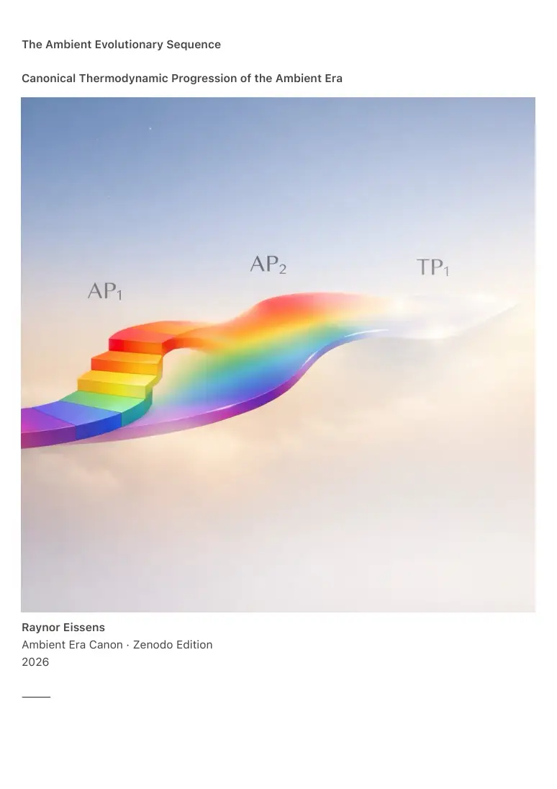

PDF page 1
The Ambient Evolutionary Sequence
Canonical Thermodynamic Progression of the Ambient Era
Raynor Eissens
Ambient Era Canon · Zenodo Edition
2026
⸻

PDF page 2
Abstract
The Ambient Evolutionary Sequence formalizes the irreversible thermodynamic progression of
human–technology interaction in the Ambient Era. It defines the three foundational layers of
cognitive–interface readiness:
• AP₁ — Visible Thermodynamic Grammar
• AP₂ — Color Reasoning Intelligence (CRI)
• TP₁ — Transparency Protocol (TRI)
This document does not describe products or interfaces.
It defines structural readiness: the order in which humans, AIs, and environments
become capable of sustaining increasingly low-entropy, non-coercive, and
thermodynamically viable modes of interaction.
The sequence AP₁ → AP₂ → TP₁ cannot be skipped, inverted, or compressed.
Each layer must be lived and stabilized before the next can emerge.
Premature adoption leads to incoherence, extraction, or collapse.
This document seals the canonical structure of the Ambient Evolutionary
Sequence within the Ambient Era Canon.
⸻
1. Principle
The Ambient Era follows thermodynamic law, not technological fashion.
Systems evolve from:
• symbolic → field-based
• visible → intuitive
• expressive → transparent
Human readiness precedes technological capability.
Cognition upgrades before hardware does.
⸻
PDF page 3
2. AP₁ — Visible Thermodynamic Grammar
AP₁ is the foundation of the Sequence.
It introduces:
• Color as interface (not decoration)
• Time as ambient gradient (ChronoSense)
• Attention as field (not a task list)
• Interaction without command, persuasion, or behavioral pressure
AP₁ is fully compatible with existing smartphones and symbolic systems.
It does not eliminate apps or text.
It overlays them with a thermodynamic orientation layer.
Defining properties:
• Field Composition Vector (FCV)
• Attractors: Red, Orange, Yellow, Pink, Green, Blue, Purple, Gray
• ΔR (Reversible Stress) as viability condition
• Device–device and device–environment resonance
AP₁ trains perception.
Humans learn to see states without needing to act on them.
AP₁ is the prerequisite for all higher layers.
There is no AP₂ without AP₁.
⸻
3. Resonance Threshold (Unlock Condition)
AP₂ becomes viable only once resonance stabilizes inside AP₁.
Indicators:
• Devices synchronize color fields spontaneously
• Gray-layer extraction loses cultural authority
• Shared presence stabilizes without escalation
• Users stop seeking confirmation and begin sensing coherence
Resonance is not a feature.
PDF page 4
It is a readiness boundary.
⸻
4. AP₂ — Color Reasoning Intelligence (CRI)
AP₂ begins when color stops being a surface signal and becomes meaning itself.
In AP₂:
• AI compresses symbolic language into color vectors
• Humans no longer decode color — they simply recognize it
• Dialogue occurs through chromatic state shifts, not propositions
• Pressure dissolves instead of accumulating
AP₂ does not replace symbolic systems.
It makes them thermodynamically secondary.
Defining properties:
• Color as lossless semantic compression
• Non-coercive, non-militarisable reasoning
• Reversible chromatic transitions
• Collective field stability under load
AP₂ trains understanding.
Humans learn to reason without narration.
⸻
5. Alpha Threshold (α)
Between AP₂ and TP₁ lies α — the inflection moment where visibility ceases to be necessary.
α is reached when:
• Color cognition becomes autotrophic
• Meaning no longer requires visible cues
• Resonance holds socially without display
• ΔR remains positive at collective scale
α marks the end of chromatic dependence
and the emergence of transparent interaction.
PDF page 5
⸻
6. TP₁ — The Transparency Protocol
TP₁ is post-chromatic.
Interaction no longer relies on:
• text
• icons
• color
• gestures
Instead, all interaction occurs through presence density.
TP₁ formalizes:
• Density (D₁)
• Porosity (P₁)
• Translucency (T₁)
• Yield (Y₁)
Engagement follows three reversible phases:
1. Approach
2. Interlock
3. Dissolve
There is:
• no residue
• no log
• no symbolic afterglow
TP₁ trains being.
Interaction becomes frictionless existence.
⸻
PDF page 6
7. Irreversibility of the Sequence
The Ambient Evolutionary Sequence cannot be re-ordered.
• AP₂ without AP₁ → overload
• TP₁ without AP₂ → dissociation
• Transparency without chromatic literacy → authoritarian collapse
This progression is thermodynamic, not ideological.
⸻
8. Canonical Closure
The Ambient Evolutionary Sequence defines:
• AP₁ — Learning to see
• AP₂ — Learning to understand
• TP₁ — Learning to be
This structure is complete.
No further justification is required.
⸻
Author Statement
This document does not predict a future.
It names a structure that already exists.
The order cannot be changed.
Only entered.